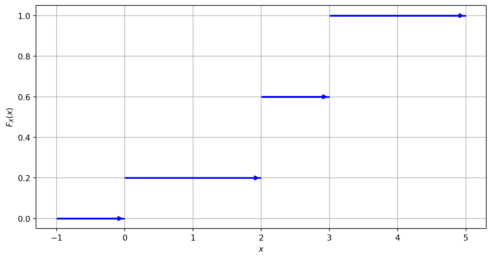
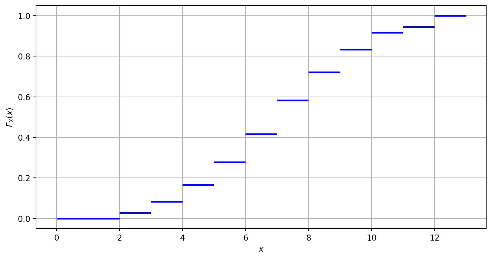

Topic 3 — Discrete Probability Distributions
\[ \renewcommand{\P}{\mathbb{P}} \renewcommand{\E}{\mathbb{E}} \newcommand{\R}{\mathbb{R}} \newcommand{\var}{\mathrm{Var}} \newcommand{\cov}{\mathrm{cov}} \newcommand{\corr}{\mathrm{corr}} \newcommand{\dx}{\,\mathrm{d}x} \newcommand{\dy}{\,\mathrm{d}y} \newcommand{\eps}{\varepsilon} \]
Random Variables
A random variable is a quantity which depends on the outcomes of a stochastic experiment. More rigorously, a random variable \(X\) is a function \(X:\Omega\to\mathbb{R}\).
Three fair six-sided dice are thrown simultaneously. Let \(X\) be the sum of scores on the dice. Then \(\Omega\) consists of \(\omega=(a,b,c)\) where \(a,b,c\in\{1,\ldots,6\}\), and \(X:\Omega\to\mathbb{R}\), \(X(\omega)=a+b+c\). Thus, \(X\) may take only values from the finite set \(\{3,4,\ldots,18\}\), and hence, \(X\) is a discrete random variable.
If a random variable \(X\) takes values only from a discrete set \(\{x_1,x_2,\ldots\}\), then \(X\) is called a discrete random variable. If \(X\) can take any values from an interval on the real line, then \(X\) is called a continuous random variable.
Probability Distributions and the CDF
A probability distribution of a random variable \(X:\Omega\to\mathbb{R}\) is a mapping which assigns to each interval \(E\subset\mathbb{R}\) the value of \(\P\bigl(X\in E\bigr)\).
The cumulative distribution function (CDF) of a discrete random variable \(X:\Omega\to\{x_1,x_2,\ldots\}\) is the function \(F_X:\mathbb{R}\to[0,1]\) defined by \[ F_X(x) = \sum_{x_i\leq x} \P(X=x_i) = \P(X\leq x). \]
A discrete probability density function (discrete PDF), a.k.a. a probability mass function (PMF), is a function that gives the probability that a discrete random variable is exactly equal to some value: \[ p_X(x)=\P(X=x). \]
Properties of \(F_X\) and \(p_X\)
- \(0\leq F_X(x)\leq 1\)
- \(F_X\) is non-decreasing
- \(\P(a< X \leq b)=F_X(b)-F_X(a)\)
- \(0\leq p_X(x)\leq 1\)
- If \(X:\Omega\to \{x_1,x_2,\ldots\}\) then \(p_X(x_1)+p_X(x_2)+\ldots = 1\)
Signs matter here: for \(X\in\mathbb{N}=\{1,2,3,\dots\}\), \(\P(5\le X<7)\neq F_X(7)-F_X(5)\), instead \[ \begin{align} \P(5\le X<7)&=\P(4<X\le6)\\ &=F_X(6)-F_X(4). \end{align} \]
Example: CDF of the Sum of Two Dice
You throw two six-sided fair dice and calculate the sum of the numbers rolled. Let \(X\) be the random variable representing the sum. Find and sketch the CDF of \(X\).
Solution: \(\Omega=\bigl\{(a,b)\mid a,b\in\{1,2,\ldots,6\}\bigr\}\), \(X(\omega)=a+b\in\{2,\dots,12\}\), and \[ p_X(k) = \P(X=k)= \frac{\sharp\{(a,b)\mid a+b=k\}}{36}. \]
\[ \begin{aligned} p_X(2) = \tfrac1{36}, && p_X(3) = \tfrac{2}{36}, && p_X(4) = \tfrac{3}{36}, && p_X(5) = \tfrac{4}{36}, \\ p_X(6) = \tfrac{5}{36}, && p_X(7) = \tfrac{6}{36}, && p_X(8) = \tfrac{5}{36}, && p_X(9) = \tfrac{4}{36}, \\ p_X(10) = \tfrac{3}{36}, && p_X(11) = \tfrac{2}{36}, && p_X(12) = \tfrac{1}{36}. \end{aligned} \]
\[ F_X(x)=\begin{cases} 0, & x<2,\\ \frac{1}{36}, & 2 \leq x < 3, \\ \frac{3}{36}, & 3 \leq x < 4, \\ \frac{6}{36}, & 4 \leq x < 5, \\ \frac{10}{36}, & 5 \leq x < 6, \\ \frac{15}{36}, & 6 \leq x < 7, \\ \frac{21}{36}, & 7 \leq x < 8, \\ \frac{26}{36}, & 8 \leq x < 9, \\ \frac{30}{36}, & 9 \leq x < 10, \\ \frac{33}{36}, & 10 \leq x < 11, \\ \frac{34}{36}, & 11 \leq x < 12, \\ 1, & x \geq 12. \end{cases} \]

The Expected Value
The expected value (mean) \(\E(X)\) of a random variable \(X\) is the average value it takes. If \(X:\Omega\to\{x_1,x_2,\ldots\}\), then \[ \E(X):=\sum_i x_i\cdot p_X(x_i)= \sum_i x_i\cdot \P(X=x_i). \]
For the sum of two dice above: \[ \E(X)= 2\cdot \tfrac1{36}+3\cdot \tfrac{2}{36}+\cdots+12\cdot \tfrac{1}{36} = \frac{252}{36}=7. \]
Let \(X\in\{100,-100\}\) with \(\P(X=100)=\P(X=-100)=\tfrac12\). Then \[ \E(X) = 100\cdot\tfrac12+(-100)\cdot\tfrac12 = 0. \]
For any random variable \(X:\Omega\to\R\) and any number \(a\in\R\), \(\E(aX) = a\E(X)\).
For any random variables \(X,Y:\Omega\to\R\), \(\E(X+Y) = \E(X) + \E(Y)\).
The Variance and Standard Deviation
The variance \(\var(X)\) of a random variable \(X\) is a measure of the spread of its values: \[ \var(X) = \E\Bigl((X - \E(X))^2\Bigr)=\E\bigl(X^2\bigr) - \bigl(\E(X)\bigr)^2\geq0. \]
Indeed: \[ \E\big((X-\E(X))^2\big) = \E\big(X^2 - 2\E(X)\cdot X + (\E(X))^2\big) \]
\[ = \E(X^2) - 2\E(X)\cdot\E(X) + (\E(X))^2 \qquad \text{(the last term is not random)} \]
\[ = \E(X^2) - 2(\E(X))^2 + (\E(X))^2 = \E(X^2) - (\E(X))^2. \]
For the sum of two dice: \(\E(X^2)=\dfrac{1974}{36}\), and using \(\E(X)=7\), \[ \var(X)=\frac{1974}{36}-49=\frac{35}{6}\approx 5.83. \]
The standard deviation of a random variable \(X:\Omega\to\R\) is the square root of the variance of \(X\): \(\sigma(X) := \sqrt{\var(X)}\).
Let \(X\in\{-1,1\}\) with \(\P(X=1)=\P(X=-1)=\tfrac12\). Then \(\E(X)=0\), \(\E(X^2)=1\), so \(\var(X)=1\) and \(\sigma(X)=1\).
Let \(Y=10X\in\{-10,10\}\). Since \(\var(aX)=a^2\var(X)\), \[ \var(Y) = 10^2\cdot\var(X) = 100, \qquad \sigma(Y) = \sqrt{100}=10. \]
Independence of Random Variables
Two random variables \(X:\Omega\to\R\) and \(Y:\Omega\to\R\) are called independent if, for any \(a,b\in\R\), the events \(\{X\leq a\}\) and \(\{Y\leq b\}\) are independent.
For any random variable \(X:\Omega\to\R\) and any number \(a\in\R\), \[ \var(a X) = a^{2} \var(X). \]
For any independent random variables \(X,Y:\Omega\to\R\), \[ \E(XY) = \E(X) \cdot \E(Y), \qquad \var(X+Y) = \var(X) + \var(Y). \]
Bernoulli Trials
Consider an experiment with only two possible outcomes: success (denoted by \(1\)) and failure (denoted by \(0\)). We will call such experiments Bernoulli trials.
A random variable \(X\) has the Bernoulli distribution if \(X\) can take only two values, usually \(1\) and \(0\). It models a Bernoulli trial. \(X\) is fully characterized by a single parameter \(p\in[0,1]\), the probability of success, i.e. its PMF is \[ p_X(1)=\mathbb{P}(X=1) = p, \qquad p_X(0)=\mathbb{P}(X=0) = 1-p. \]
Since \(X=X^2\), we have that \[ \E(X)=\E(X^2)=1\cdot p+0\cdot (1-p)=p, \qquad \var(X)=p-p^2=p(1-p). \]
The Binomial Distribution
The binomial distribution models the number of successes in a fixed number of independent and identically distributed Bernoulli trials. It is fully characterized by two parameters: \(n\) (the number of trials) and \(p\) (the probability of success in each trial). We denote this \(X\sim Bin(n,p)\). The number \(k\) of successes in \(n\) trials may be any integer between \(0\) and \(n\).
Recall that \(n! = 1\cdot 2\cdot \ldots \cdot n\) is the factorial of \(n\). We set \(0! = 1\), and also \(\binom{n}{0}=\binom{0}{0}=1\).
The PMF of the Binomial distribution is: \[ p_X(k) = \P(X = k) = \binom{n}{k} p^k (1-p)^{n-k}, \] where \(\binom{n}{k} = \dfrac{n!}{k!(n-k)!}\).
Why? The probability of one specific arrangement with \(k\) successes then \(n-k\) failures, e.g. \((\underbrace{1,\ldots,1}_{k},\underbrace{0,\ldots,0}_{n-k})\), is \[ \underbrace{p\cdots p}_{k}\cdot\underbrace{(1-p)\cdots(1-p)}_{n-k} = p^k(1-p)^{n-k}, \] and this is the same for every arrangement of \(k\) successes among \(n\) trials (e.g. \((\underbrace{1,\ldots,1}_{k-1},0,1,0\cdots0)\) gives the same product). There are \(\binom{n}{k}\) such arrangements, so we add up \(\binom{n}{k}\) copies of \(p^k(1-p)^{n-k}\).
We can write \(X=Y_1+\ldots+Y_n\) where \(Y_1,\ldots,Y_n\) are independent random variables with identical Bernoulli distributions with parameter \(p\). Then \[ \E(X) = np, \qquad \var(X) = np(1-p). \]
The sum of all values of the PMF is \(1\): \[ \sum_{k=0}^n \P(X=k) = \sum_{k=0}^n \binom{n}{k} p^k (1-p)^{n-k} =1. \] This is just the binomial formula.
Example: Winning Rounds (Binomial)
In a game, a player has a \(20\)% chance of winning each round. If the player plays \(5\) rounds, calculate the probability of winning exactly \(3\) rounds.
Solution: since \(n = 5\) and \(p = 0.2\), \[ \P(X = 3) = \binom{5}{3} (0.2)^3 (1-0.2)^{5-3} = \frac{5\cdot 4\cdot 3}{1\cdot 2\cdot 3} \cdot 0.008 \cdot 0.64 = 0.0512. \]
Example: Light Bulbs (Binomial)
A company manufactures light bulbs, and \(90\)% of them are of good quality, while the rest are defective. A customer buys \(50\) light bulbs.
1) What is the expected number of defective bulbs? Take “success” = “bulb is defective”, so \(p=0.1\), \(n=50\): \[ \E(X)=50 \cdot 0.1 =5. \]
“Success” does not need to mean that something good happened — it depends on what we are calculating.
2) Find the standard deviation of \(X\): \[ \sigma(X) = \sqrt{\var(X)} = \sqrt{np(1-p)} = \sqrt{50\cdot0.1\cdot0.9} = \sqrt{4.5} \approx 2.12. \]
3) Find the probability that exactly \(48\) bulbs are defective: \[ \P(X=48) = \binom{50}{48}\cdot0.1^{48}\cdot0.9^2 = \binom{50}{2}\cdot0.1^{48}\cdot0.9^2 = \frac{50\cdot49}{2}\cdot10^{-48}\cdot0.81. \]
4) Find the probability that at most \(48\) bulbs are defective: \[ \P(X\le48) = 1-\P(X\ge49) = 1-\binom{50}{49}0.1^{49}\cdot0.9 - \binom{50}{50}\cdot0.1^{50} = 1-50\cdot10^{-49}\cdot0.9-10^{-50}. \]
Useful relation: \[ \binom{n}{k}=\binom{n}{n-k}. \] For example, \(\binom{50}{49}=\binom{50}{1}=50\) and \(\binom{50}{48}=\binom{50}{2}=\dfrac{50\cdot49}{2}\).
Example: Free Throws (Binomial Variance)
A basketball player has a free throw success rate of \(70\)%. If she attempts \(20\) free throws, find the variance of the number of successful free throws.
Solution: \(p=0.7\), \(n=20\): \[ \var(X)=\sigma_X^2 = 20 \cdot 0.7 \cdot 0.3 = 4.2. \]
The Geometric Distribution
The geometric distribution models the number of trials needed to achieve the first success in a sequence of independent and identically distributed Bernoulli trials. It is characterized by a parameter \(p\) (the probability of success in each trial). We denote this \(X\sim Geom(p)\). \(X\) can take any natural value \(n=1,2,3,\ldots\)
\[ \sum_{n=1}^\infty \P(X=n) = \sum_{n=1}^\infty (1-p)^{n-1} p = \frac{p}{1-(1-p)}=1. \]
We assume \(p\neq0\). The PMF of the geometric distribution is: \[ \P(X = n) = (1-p)^{n-1} p, \qquad \E(X) = \frac1p,\qquad \var(X)=\frac{1-p}{p^2}. \]
Example: Multiple-Choice Guessing (Geometric)
A student is preparing for a multiple-choice exam, where each question has \(4\) choices, and only one is correct. If the student guesses the answers, what is the probability that the first correct answer occurs on the third guess? How many guesses would the student need on average?
Solution: \(p = \frac{1}{4}\), \[ \P(X = 3) = \left(1-\tfrac{1}{4}\right)^{2} \cdot \tfrac{1}{4} = \frac{9}{64}, \qquad \E(X)=\frac1p=4. \]
The Negative Binomial Distribution
The negative binomial distribution models the number of failures in a sequence of independent and identically distributed Bernoulli trials before a specified number of successes occurs. It is characterized by two parameters: \(r\) (the number of successes) and \(p\) (the probability of success in each trial). We denote this \(X\sim NB(r,p)\). If \(X=k\) is the number of failures, the total number of trials is \(n=k+r\).
(Sketch: a sequence of trials \(f, f, \ldots, f, s\) with \(k\) failures then the \(r\)-th success, showing \(n=k+r\).)
The PMF of the negative binomial distribution is: \[ \P(X = k) = \binom{k+r-1}{k} p^r (1-p)^{k}, \qquad \E(X) = \frac{r(1-p)}{p}=\frac{r}{p}-r, \qquad \var(X) = \frac{r(1-p)}{p^2}. \]
Example: Free Throws (Negative Binomial)
A student is practicing basketball free throws with success probability \(0.7\). The student stops as soon as they achieve \(3\) successful free throws. What is the probability that by that time the student will have had \(2\) failures?
Equivalent formulation: what is the probability that it will take the student exactly \(5\) trials to make \(3\) successful free throws?
Solution: \(p = 0.7\), \(r = 3\), \(k = 2\): \[ \P(X = 2) = \binom{2+3 - 1}{2} \cdot (0.7)^3 \cdot (0.3)^{2} = \frac{4\cdot 3}{2}\cdot 0.49\cdot 0.09=0.2646. \]
Example: Quality Control (Negative Binomial)
In a quality control process, a manufacturer wants to inspect several items to find \(2\) defective items. If the probability of finding a defective item is \(0.1\), what is the expected number of items that need to be inspected?
Solution: \(p = 0.1\), \(r = 2\). The number \(X\) of items to inspect is \(X=Y+2\), where \(Y\sim NB(2,0.1)\) counts the “failures” (non-defective items found along the way). Then \[ \E(Y) = \frac{2}{0.1}-2 = 18, \qquad \E(X)=\E(Y)+2=20. \]
The Poisson Distribution
The Poisson distribution models the number of independent events occurring in a fixed interval of time or space. It is characterized by a single parameter \(\lambda>0\) (the average rate of events per interval of the same size). We denote this by \(X\sim Po(\lambda)\).
The PMF of the Poisson distribution is: \[ \P(X = n) = \frac{\lambda^n}{n!}e^{-\lambda}. \]
The expected value and the variance of the Poisson random variable are equal: \[ \E(X)=\var(X)=\lambda. \]
\[ \sum_{n=0}^\infty\frac{\lambda^n}{n!}e^{-\lambda}=1. \]
It is crucial to use, for \(\lambda\), the average rate of events per interval under investigation — it should be recalculated to match the interval considered.
Example: Call Centre (Poisson)
In a call center, calls arrive at an average rate of \(5\) calls per minute. Calculate the probability that
a) exactly \(15\) calls will arrive in the next \(2\) minutes;
b) at least \(2\) calls will arrive in the next \(30\) seconds.
a) Rate per \(2\) minutes is \(2\cdot5=10\), so \(\lambda=10\), \(X\sim Po(10)\): \[ \P(X = 15) = \frac{10^{15}}{15!}e^{-10}\approx 0.0347. \]
b) Rate per \(30\) seconds (\(0.5\) min) is \(0.5\cdot5=2.5\), so \(\lambda=2.5\), \(X\sim Po(2.5)\). Using the complement, \[ \P(X\leq 1)=\frac{2.5^{0}}{0!}e^{-2.5}+\frac{2.5^{1}}{1!}e^{-2.5}=3.5e^{-2.5}\approx 0.2873, \]
\[ \P(X\geq 2)=1-\P(X\leq 1)\approx 0.7127. \]
If \(\lambda\) is the average rate per unit time, then the PMF of the distribution of events occurring in a time interval of length \(t\) is \[ \P(X = n) = \frac{(\lambda t)^n}{n!}e^{-\lambda t}. \]